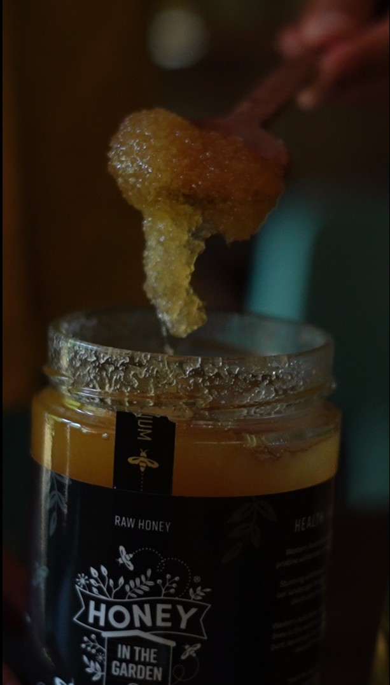
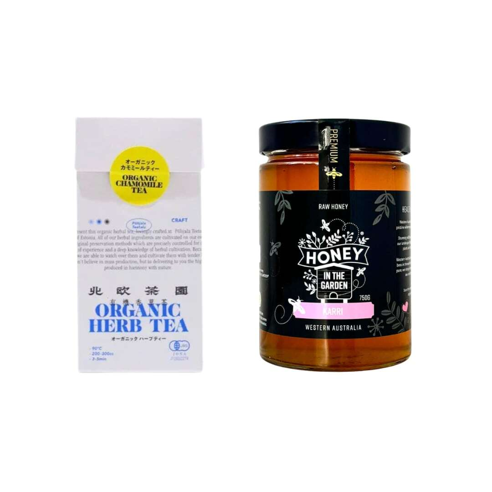
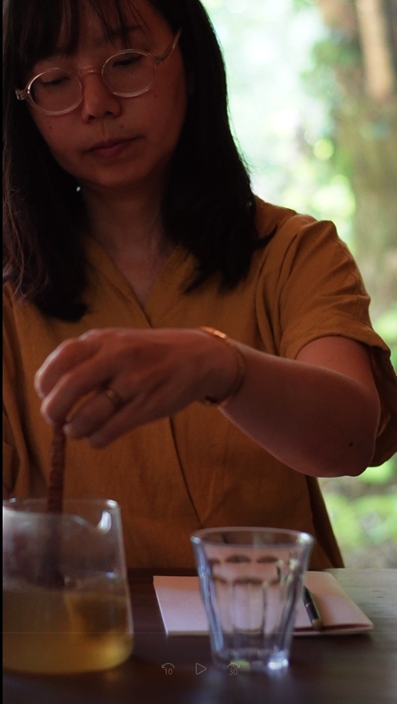
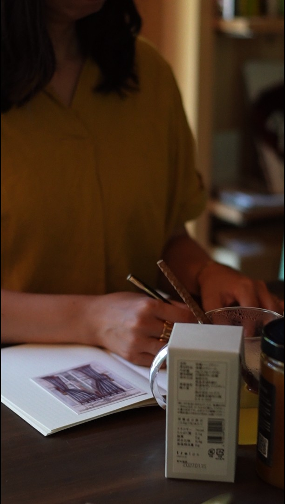

淹れる
カモミールティーを200〜300mlのお湯でゆっくり淹れる。
Let the afternoon breathe.
カリ蜂蜜 × カモミールティー × ジャーナリング
あたたかい一杯を淹れて、ノートを開く。
カリのやさしい甘さと、カモミールの花の香りで、
一日の途中に少しだけ自分へ戻る時間を。
Brew. Sweeten. Write.
忙しい一日の途中に、少しだけ手を止める。お湯を注ぎ、蜂蜜をひと匙。そして、今の自分の中にあるものをノートへ。
特別な準備はいりません。必要なのは、あたたかい一杯と、書くための余白だけ。
カモミールティーを200〜300mlのお湯でゆっくり淹れる。

少し冷めたタイミングで、カリをひと匙。花の香りに、やさしい甘さが重なります。
ノートに、今思っていることをそのまま書き出す。きれいな文章にしなくて大丈夫。ただ、自分の中にあるものを紙の上に置いていく時間です。
The Set
西オーストラリアから届く、軽やかでやさしい甘さのはちみつ。
0.8g × 10包。ほんのり甘い香りと、フルーティーな風味が広がるオーガニックハーブティー。
この2つを合わせることで、カモミールの花の香りに、カリのまろやかな甘さが重なります。


Pairing
カモミールティーだけでも、やさしい香りの一杯。そこにカリをひと匙加えると、花の香りにまろやかな甘さが重なり、より満足感のある午後の一杯になります。
カリは、重たく残りすぎない、軽やかな甘さが魅力。ハーブティーの香りを邪魔せず、むしろやさしく引き立ててくれます。
だからこのセットは、夜に深く休むためというより、午後に気分を軽やかに切り替えたい時間におすすめです。
Journaling
ジャーナリングは、きれいな文章を書く時間ではありません。誰かに見せるものでも、正しくまとめるものでもありません。
あたたかいカモミールティーをそばに置いて、カリの甘さをゆっくり味わいながら、今の自分にあるものをそのまま書いてみる。たとえば、こんな一行から。

From the owner
この組み合わせを飲んだ時、最初に感じたのは「これは午後にいい」ということでした。
カリの甘さは軽やかで、カモミールの花の香りを邪魔しません。むしろ、香りをふわっと広げてくれるような一杯になります。
午後3時から5時頃。夕方以降の家族時間や、仕事の後半に入る前に。
ノートを開いて、今の自分にあるものを書き出しながら、ゆっくり味わっていただきたいセットです。
— MARIPOSA 店主
Quality
カリ蜂蜜は、自然のままの姿で瓶詰めされた、非加熱・完全天然のはちみつ。農薬フリー、グリホサートフリー、抗生剤フリー、シロップフリー。
カモミールティーは、有機JAS認証のオーガニックハーブティー。100%自社農園栽培、農薬・化学肥料不使用、有機カモミール使用。ティーバッグには、プラスチックフリーな紙製パックが使われています。
自分のための時間に、心地よく選べるセットです。
カリ Karri 750g 北欧茶園 オーガニック カモミールティー 10包
あたたかい一杯を淹れて、ノートを開く。
午後に、風が通るような時間を。
FAQ
午後のひと息、手帳時間、夕方前に少し気分を切り替えたい時間におすすめです。
カモミールティーを淹れて少し冷めたタイミングで、カリをひと匙。甘さがほしい時は少し多めもおすすめです。
はい。カリは750g入りなので、紅茶、ヨーグルト、パン、チーズ、コーヒーなどにも合わせて長く楽しめます。
天然のはちみつは結晶化することがありますが、品質には問題ありません。
1歳未満の乳児には、はちみつを与えないでください。
ジャーナリングや手帳時間が好きな方、ハーブティーやはちみつが好きな方へのギフトにもおすすめです。
Let the afternoon breathe.
忙しさの中で、自分のことを後回しにしがちな日にも。あたたかいカモミールティーと、カリのやさしい甘さ。そして、ノートに向かう数分。
大きく生活を変えなくても、小さな習慣がひとつあるだけで、日々の流れは少しやさしくなります。
午後の風通しジャーナリングset
数量限定 500円OFF